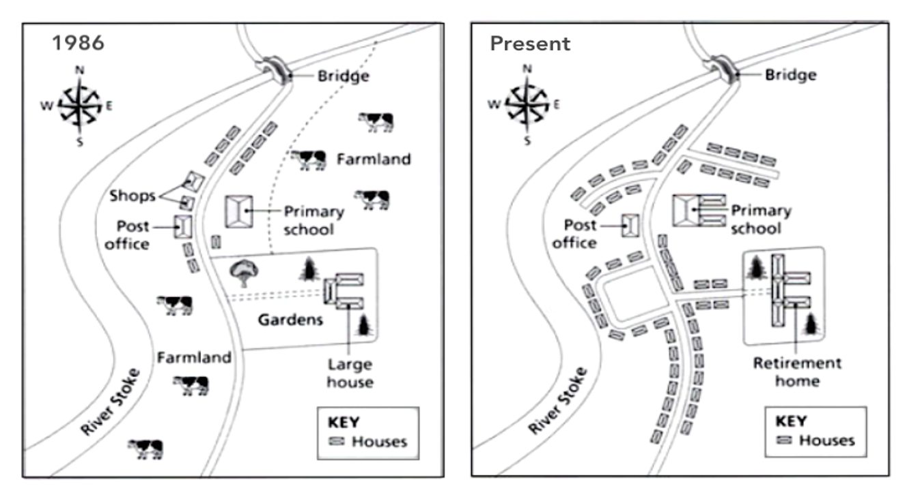

You should spend about 20 minutes on this task.
The two maps below show the changes in town of Denham from 1986 to the present day.
Summarise the information by selecting and reporting the main features making comparisons where relevant
Write at least 150 words.
